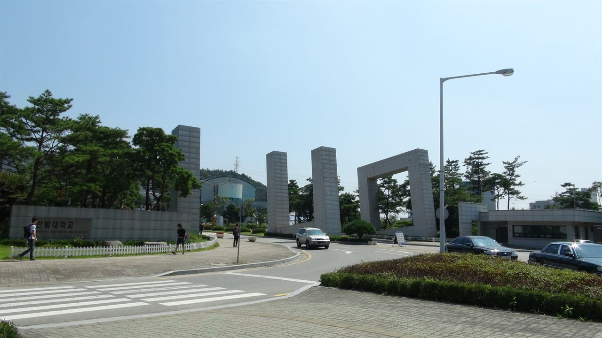

국립한밭대학교(한밭대)는 대전광역시 유성구 동서대로에 있는 국립대학입니다. 1927년 홍성공립공업전수학교로 출발한 공학 중심 국립대로, 대덕연구개발특구와 맞닿은 자리에 있습니다.
2027학년도 수시 원서접수는 2026년 9월 7일 오전 10시부터 11일 오후 6시까지였고 이미 마감됐습니다. 그런데도 이 글을 지금 정리하는 이유가 있습니다. 한밭대에는 다른 대학 기사를 읽을 때 늘 따라붙던 문장 하나가 아예 없기 때문입니다. 수능최저학력기준입니다.
이번 수시의 큰 그림을 먼저 정리하면 이렇습니다.
- 모든 수시전형에 수능최저학력기준을 적용하지 않음
- 학생부교과는 교과 90% + 출결 10%, 반영 과목은 13개
- 지역인재는 대전·세종·충남·충북 고교 3년 이수자 대상, 300명이 넘는 규모
- 학생부교과 사회통합전형이 올해 신설
- 면접이 있는 전형의 면접고사는 11월 20일
① 수능최저가 없다는 말의 진짜 뜻
보도된 내용에 따르면 한밭대는 모든 수시전형에 수능최저학력기준을 적용하지 않습니다. 교과도, 종합도, 지역인재도 마찬가지입니다.
이 문장은 수험생에게 두 가지로 읽힙니다. 하나는 반가운 쪽입니다. 내신은 나왔는데 수능 모의고사가 흔들리는 학생에게, 수능최저는 원서를 쓰고도 마지막에 떨어뜨리는 관문입니다. 그 관문이 없다는 것은 지원서에 적은 조건이 끝까지 그대로 간다는 뜻입니다.
다른 하나는 냉정한 쪽입니다. 수능최저가 없으면 지원자가 걸러지지 않습니다. 수능최저가 있는 대학에서는 합격선이 서류나 내신만으로 정해지지 않습니다. 붙을 성적이었는데 최저를 못 맞춰 떨어지는 인원이 매년 나오고, 그만큼 추가합격이 돌아갑니다. 최저가 없는 곳에서는 그 빈자리가 생기지 않습니다.
그래서 결론은 이렇게 됩니다. 최저가 없는 전형은 지원이 쉬운 전형이지 합격이 쉬운 전형이 아닙니다. 실제로 한밭대의 2027학년도 수시 최종 경쟁률은 8대 1을 넘었고, 대학 측 발표 기준으로 6년 연속 상승했습니다. 특히 학생부종합 일반전형과 지역인재 교과전형은 10대 1을 넘는 경쟁률을 보였습니다.
고2·고1 학부모님께 이 대목을 특히 말씀드립니다. "수능최저 없는 대학"이라는 이유로 안전 카드처럼 생각하셨다면, 경쟁률 숫자를 한 번 더 보시는 편이 좋습니다.
② 학생부교과 — 결국 13개 과목입니다
한밭대 수시에서 가장 규모가 큰 쪽은 학생부교과입니다. 학생부교과(일반)만 1,000명이 넘고, 여기에 지역인재(교과)와 신설된 사회통합전형이 더해집니다.
전형 방법은 단순합니다.
- 교과성적 90% + 출결 10%
- 공통·일반선택에서 국어·수학·영어 상위 3과목과 사회·과학 상위 4과목, 합쳐서 13개 과목을 80% 반영
- 진로선택과목은 국어·수학·영어·사회·과학 중 상위 3과목을 10% 반영
여기서 놓치기 쉬운 것이 '상위'라는 두 글자입니다. 3년 동안 배운 모든 과목을 다 더하는 방식이 아니라, 잘 나온 과목만 골라 쓰는 구조입니다.
이 구조가 만드는 차이는 생각보다 큽니다. 전 과목 평균으로 계산한 내신 등급이 목표에 못 미쳐도, 국어·수학·영어 중 잘한 세 과목과 사회·과학 중 잘한 네 과목을 다시 뽑아 계산하면 숫자가 달라지는 학생이 적지 않습니다. 반대로 "평균은 괜찮은데 잘하는 과목이 뚜렷이 없는" 학생은 이 계산에서 손해를 봅니다.
그러니 고1·고2 학생이라면 지금 해 볼 일은 하나입니다. 자기 성적표에서 국·수·영 상위 세 과목과 사·과 상위 네 과목을 직접 골라 따로 평균을 내 보십시오. 그 숫자가 이 대학 교과전형에서 쓰이는 숫자에 가깝습니다. 전체 평균 등급만 보고 있으면 자기 위치를 잘못 알게 됩니다.
출결 10%도 가볍게 보지 마시기 바랍니다. 성적과 달리 출결은 노력으로 올리는 항목이 아니라 지키면 만점, 놓치면 회복이 안 되는 항목입니다. 2학년 때 무단결석 며칠이 3학년 9월에 되돌릴 수 없는 감점으로 남습니다.
다만 반영 교과의 학년별 가중치, 등급별 환산 점수표, 출결 감점의 구체적 기준은 이 글에서 확인하지 못했습니다. 모집요강 원문의 성적 산출 방법에서 직접 확인하셔야 하는 항목입니다.
③ 지역인재 — 충청권 학부모님이 먼저 보셔야 할 부분
한밭대 지역인재전형의 대상 지역은 대전·세종·충남·충북입니다. 교과와 종합을 합쳐 300명이 넘는 규모로 뽑습니다. 충청권에 사는 학생에게는 다른 지역 학생과 겹치지 않는 별도의 문이 하나 더 있는 셈입니다.
자격 요건은 해당 지역 고등학교에서 입학부터 졸업까지 전 교육과정 3년을 이수했거나 이수 예정인 학생입니다. 여기서 두 가지를 구분해 두십시오.
- 2027학년도 — 해당 지역 고등학교에서 고교 3년 전 과정을 이수하면 됩니다. 중학교가 어디였는지는 따지지 않습니다.
- 2028학년도부터 — 여기에 더해 중학교 때부터의 거주 요건이 강화됩니다. 지금 중학생인 자녀가 지역인재를 생각하고 있다면, 고등학교를 고르는 시점이 아니라 지금 살고 있는 곳과 다니는 중학교가 이미 조건에 들어갑니다.
"고등학교만 대전에서 보내면 된다"고 알고 계셨다면 지금 확인하셔야 합니다. 나중에 알면 되돌릴 방법이 없는 항목입니다.
한 가지 더. 지역인재는 흔히 '문이 넓은 전형'으로 알려져 있지만, 올해 한밭대에서는 지역인재 교과전형이 전체에서 두 번째로 높은 경쟁률을 기록했습니다. 충청권 학생들 사이에서 이미 알려진 길이라는 뜻입니다. 자동으로 유리해지는 전형이 아니라 경쟁 상대가 충청권 학생으로 좁혀지는 전형이라고 이해하시는 편이 정확합니다.
④ 학생부종합 — 서류로 5배수, 그다음이 면접입니다
한밭대 학생부종합은 서류평가 100%로 뽑는 전형과 면접이 있는 단계별 전형이 함께 운영됩니다. 학생부종합(일반)과 학·석사 과정 전형은 학교생활기록부를 활용한 서류평가만으로 선발하고, 면접을 실시하는 전형은 다음 구조를 따릅니다.
- 1단계 — 서류평가로 모집인원의 5배수 선발
- 2단계 — 서류 70% + 면접 30%
- 면접은 학교생활기록부를 기반으로 진행
- 면접고사는 11월 20일
'학생부 기반 면접'이라는 말을 정확히 이해하시는 것이 중요합니다. 시사 문제나 전공 지식을 묻는 자리가 아니라, 당신이 3년 동안 적어 낸 기록이 사실인지, 그 안에 본인 생각이 들어 있는지를 확인하는 자리입니다.
그래서 준비 방법도 정해져 있습니다. 예상 질문집을 외우는 것보다 자기 학생부를 처음부터 끝까지 소리 내어 읽어 보는 것이 먼저입니다. 읽다가 "이건 뭐였더라" 싶은 줄이 나오면, 그 줄이 곧 면접 질문입니다. 기록에는 있는데 말로 설명이 안 되는 항목이 면접에서 가장 아프게 돌아옵니다.
2단계 비중이 서류 70%라는 점도 함께 보십시오. 면접으로 뒤집는 전형이 아니라, 서류로 앞서 있는 상태를 면접에서 지키는 전형에 가깝습니다. 1단계를 통과했다는 것은 서류가 이미 일정 수준이라는 뜻이니, 면접에서는 새로운 것을 보여주려 하기보다 서류에 적힌 것을 차분히 설명하는 쪽이 낫습니다.
한밭대에는 융합자율대학(입학 후 1년 뒤 전공을 정하는 과정)과 학·석사 통합과정처럼 학과 선택 방식 자체가 다른 트랙도 있습니다. 반도체시스템공학과, 우주국방첨단융합학과, 빅데이터헬스케어융합학과처럼 최근 산업 수요를 반영해 만든 모집단위도 있습니다. 이런 트랙은 지원 자격과 입학 후 이수 과정이 일반 학과와 다를 수 있으니, 전형 방법만 보지 마시고 입학 후 과정까지 학과 안내에서 함께 확인하시기 바랍니다.
⑤ 올해 새로 생긴 전형 하나
2027학년도에 학생부교과 사회통합전형이 신설됐습니다. 모집 규모는 한 자릿수로 작지만, 첫해임에도 10대 1을 넘는 경쟁률을 기록했습니다.
신설 전형은 매년 같은 특징을 보입니다. 지난해 입시결과가 존재하지 않습니다. 지원자 입장에서는 기준선을 잡을 자료가 없고, 그래서 "모르니까 일단 써 본다"와 "모르니까 피한다"가 동시에 나타납니다. 올해 결과가 나오면 내년부터는 이 전형에도 참고할 숫자가 생깁니다.
다만 이 전형의 지원 자격은 일반 교과전형과 다릅니다. 해당 여부는 반드시 모집요강의 지원 자격 원문으로 확인하셔야 합니다. 이 글에서 자격 조건을 확정해 말씀드리지 않겠습니다.
⑥ 지원 전 체크리스트
- 전체 평균 등급이 아니라 반영 13과목으로 계산해 보셨습니까? — 국·수·영 상위 3과목 + 사·과 상위 4과목입니다. 숫자가 달라질 수 있습니다.
- 진로선택과목 상위 3개는 무엇입니까? — 10%지만 반영됩니다. 성취도가 어떻게 점수로 바뀌는지는 요강에서 확인하십시오.
- 출결에 감점 요소가 있습니까? — 10%입니다. 이미 지난 일은 못 바꾸지만, 남은 학기는 지킬 수 있습니다.
- 지역인재 자격이 되십니까? — 대전·세종·충남·충북 고교 3년 이수. 중학생 자녀는 2028학년도 거주 요건을 지금 확인하십시오.
- 면접이 있는 전형에 쓰셨습니까? — 11월 20일입니다. 그전까지 자기 학생부를 소리 내어 읽어 두십시오.
⑦ 학년별로 지금 할 일
- 고3 — 원서는 마감됐습니다. 수능최저가 없으니 수시 결과는 이미 제출한 내신·서류로 정해집니다. 지금 시간을 쏟을 곳은 면접 준비와 정시 대비 수능 공부 두 가지뿐입니다. 결과를 기다리며 손을 놓는 것이 가장 나쁜 선택입니다.
- 고2 — 반영 과목 구조를 지금 알고 3학년 1학기를 설계하십시오. 국·수·영에서 확실한 세 과목, 사·과에서 확실한 네 과목을 만들어 두는 것이 전 과목을 고르게 끌어올리는 것보다 이 대학 기준에서는 효율적입니다.
- 고1 — 1학년 성적이 3년 내신에 그대로 쌓입니다. 그리고 출결은 지금부터 끝까지 관리 대상입니다.
- 중학생 — 대전·세종·충남·충북에 사신다면 2028학년도부터 강화되는 지역인재 거주 요건이 지금 진행 중인 조건입니다. 고등학교 진학 후에는 손쓸 수 없습니다.
와와 학습코칭센터에서는 아이의 내신을 지원하려는 대학의 반영 방식대로 다시 계산해 지금 어느 과목부터 손을 대야 하는지 함께 정리해 드립니다. 가까운 센터에서 무료 상담을 받아 보실 수 있습니다.
※ 본 글은 국립한밭대학교의 2027학년도 수시모집 관련 보도와 대학 입학정보 공개 내용을 바탕으로 정리했습니다. 전형별 세부 모집인원, 등급별 환산 점수표와 학년별 반영 비율, 진로선택과목 성취도 환산 방식, 출결 감점의 구체적 기준, 학생부종합 서류평가의 항목별 배점, 면접 형식과 시간, 사회통합전형의 지원 자격 요건, 합격자 발표 일정, 융합자율대학·학·석사 통합과정의 입학 후 이수 요건은 확인하지 못해 이 글에 담지 않았습니다. 모집인원과 경쟁률은 보도된 범위 안에서 완충해 표기했으며 확인되지 않은 숫자는 기재하지 않았습니다. 사진은 과거에 촬영된 것으로 현재 모습과 다를 수 있습니다. 세부 사항은 모집요강에서 확정되며 변경될 수 있으므로, 반드시 국립한밭대학교 입학처의 2027학년도 수시모집요강 원문에서 본인 지원 모집단위 기준으로 최종 확인하시기 바랍니다.